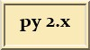
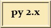

Python Záložky
 

Jako počátek je to vytaženo ze záložek Firefoxe. Neváhejte s přidáváním, opravováním, mazáním, přeskupováním, apod. At je to aktuální a funkční.
Hlavní
- Python Programming Language: http://www.python.org/
- Daily Python-URL: http://www.pythonware.com/daily/index.htm
- Python Help, Python Code, Python Tutorials, Python Programming: http://www.devshed.com/c/b/Python/
- zephyrfalcon.org :: labs :: 10 Python pitfalls: http://zephyrfalcon.org/labs/python_pitfalls.html
- The Python Challenge: http://www.pythonchallenge.com/
- ONLamp.com: Python DevCenter: http://www.onlamp.com/python/
- Open Directory - Computers: Programming: Languages: python: http://dmoz.org/Computers/Programming/Languages/Python/
- FAQTs - Knowledge Base - faqts : Computers : Programming : Languages : Python: http://www.faqts.com/knowledge_base/index.phtml/fid/199
- Charming Python, a column by David Mertz: http://gnosis.cx/publish/tech_index_cp.html
- Software Carpentry: http://www.third-bit.com/swc/www/index.html
Kuchařky, příklady scriptů
Download
- Python eggs: http://www.python-eggs.org/
- BerliOS Developer: Welcome: http://developer.berlios.de/
- Useless Python :: Source Code: http://www.uselesspython.com/showcontent.php
- The Vaults of Parnassus:: http://py.vaults.ca/apyllo.py?a=l
- SourceForge.net Welcome: http://sourceforge.net/
- PyPI: http://www.python.org/pypi
- freshmeat.net: Browse project tree - Programming Language :: Python: http://freshmeat.net/browse/178/
- ActiveState O'Reilly Python cookbook code samples ratings review: http://aspn.activestate.com/ASPN/Cookbook/Python/
Edu - tutoriály
- http://docs.python.org/
- Python and XML Processing: http://pyxml.sourceforge.net/topics/
- LiveWires: Python course: http://www.livewires.org.uk/python/
- awaretek.com :: Python Tutorials: http://www.awaretek.com/tutorials.html
- Charming Python, a column by David Mertz: http://gnosis.cx/publish/tech_index_cp.html
- Konrad Hinsens Python Page: http://starship.python.net/crew/hinsen/
- Introduction to OOP with Python: http://www.voidspace.org.uk/python/articles/OOP.shtml
- Python Objects ::: www.effbot.org: http://www.effbot.org/zone/python-objects.htm
- Python Short Course: http://www.wag.caltech.edu/home/rpm/python_course/
- http://pytut.infogami.com/ http://effbot.org/pytut/
- http://homepage.mac.com/s_lott/books/index.html
Kompilace pod Windows
- sebsauvage.net : Writing C/C++ Python extensions without Microsoft Visual C++: http://sebsauvage.net/python/mingw.html
- MinGW - Python extensions: http://www.mingw.org/MinGWiki/index.php/Python%20extensions
- MinGW - Getting Started: http://www.mingw.org/MinGWiki/index.php/GettingStarted
- Building Python Extensions with the MS Toolkit Compiler: http://www.vrplumber.com/programming/mstoolkit/
Srovnání
- TPCI - TIOBE Programming Community Index: http://www.tiobe.com/tpci.htm
- LanguageComparisons - PythonInfo? Wiki: http://wiki.python.org/moin/LanguageComparisons
Scripting Office
- udk: Python-UNO bridge: http://udk.openoffice.org/python/python-bridge.html
- Automating Word Using the Word Object Model: http://msdn.microsoft.com/library/default.asp?url=/library/en-us/dv_wrcore/html/wrtskhowtocreatenewdocuments.asp
- Python Programming on Win32: Chapter 12 Advanced Python and COM: http://www.oreilly.com/catalog/pythonwin32/chapter/ch12.html
- microsoft word object model - Vyhledat Googlem: http://www.google.com/search?hl=cs&q=%22microsoft+word+object+model%22&btnG=Vyhledat+Googlem&lr=
- Tim Goldens Python Stuff: wmi: http://tgolden.sc.sabren.com/python/winshell.html
- www.cpress.cz - /knihy/wsh/: http://www.cpress.cz/knihy/wsh/
- Python-win32 Info Page: http://mail.python.org/mailman/listinfo/python-win32
- Win32 Scripting.... Everything you need to get up and running: http://cwashington.netreach.net/
- Python scripts master index.: http://www.microsoft.com/technet/scriptcenter/scripts/python/pyindex.mspx
Blogy, čerstvé zprávy
- http://www.planetpython.org/
- http://www.artima.com/weblogs/index.jsp?blogger=guido
- http://www.pythonware.com/daily/
- http://online.effbot.org/
- http://blog.ianbicking.org/
- http://www.amk.ca/diary/